喝水不忘挖井人，感谢Segger提供这么好的工具，感谢XHWW、T大神等的帮助，也感谢凤舞天大哥的支持，这些年学习了很多，也一直都在享受便利的开发，非常非常的感谢~
同时声明：本人不卖盗版，请支持正版，支持正版，支持正版！
JLink - Flasher Portable Plus
自从Segger的Flasher Portable诞生以来，垂涎滴了又滴，官方介绍如 链接 ，简单来说就是带1.8寸屏显的离线烧录器，支持N多ARM和非ARM核的芯片，支持JTAG/SWD/FINE/SPD等 接口，还自带680mAh的可充电锂电池，超级方便，虽然自个也曾做过离线烧写，基于DAPLink来搞的，但是在量产使用时心里总不放心，最近花了些时间研究下了Flasher Portable，一不小心给搞出来了，非常开心~ 如下图：
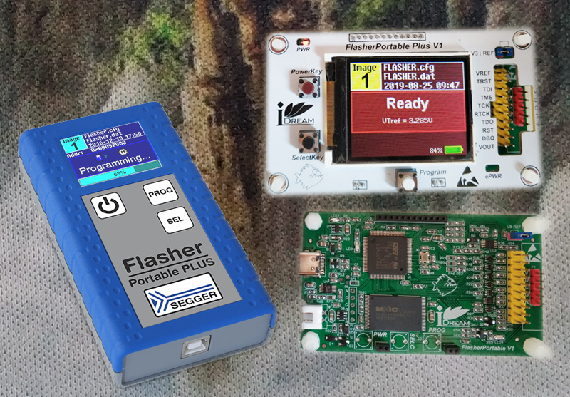
MDK下测试JTAG下载速度可到21000KHZ，SWD却只有12000KHZ，我用足矣。按惯例，去掉接口缓冲芯片（芯片太小，手焊太麻烦，而且我老眼昏花，小芯片上的丝印经常看不清，一不小心就方向焊反了，查找起来太麻烦）、电源输入输出那套啰里啰唆部分电路，然后精简如下：
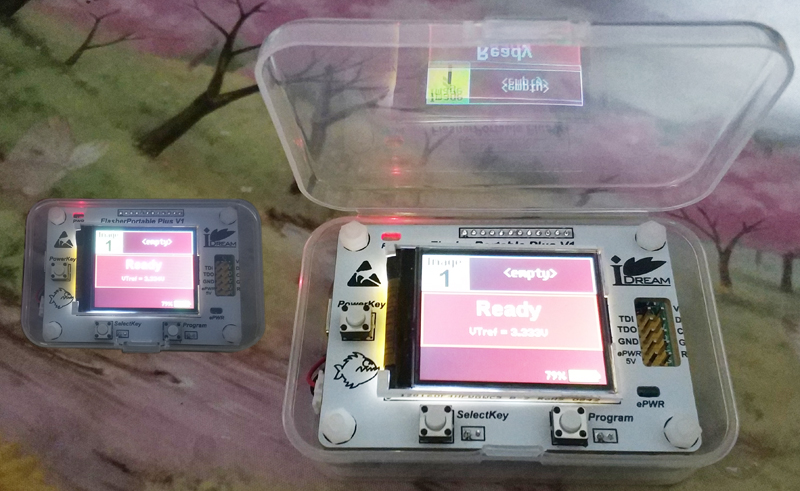
测试速度不影响，灰常好用，还给赛到了个小盒子里，方便携带~
JLink - Flasher Pro V4
年代比较久远了，出自于XHWW大神之作，后来偶得一正版Flasher Pro，就读出了固件，顺便精简了一下穿上了外衣，非常非常的好用，陪伴我很多年，如下图示：
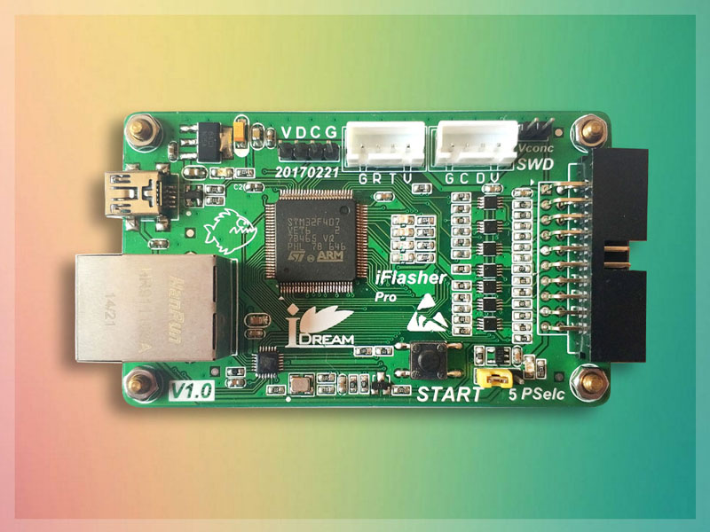
可惜Flasher系列都不支持虚拟串口，好在有RTT，自从有了RTT，虚拟串口是路人~
当然也少不了我的Mini Flasher Pro V4：
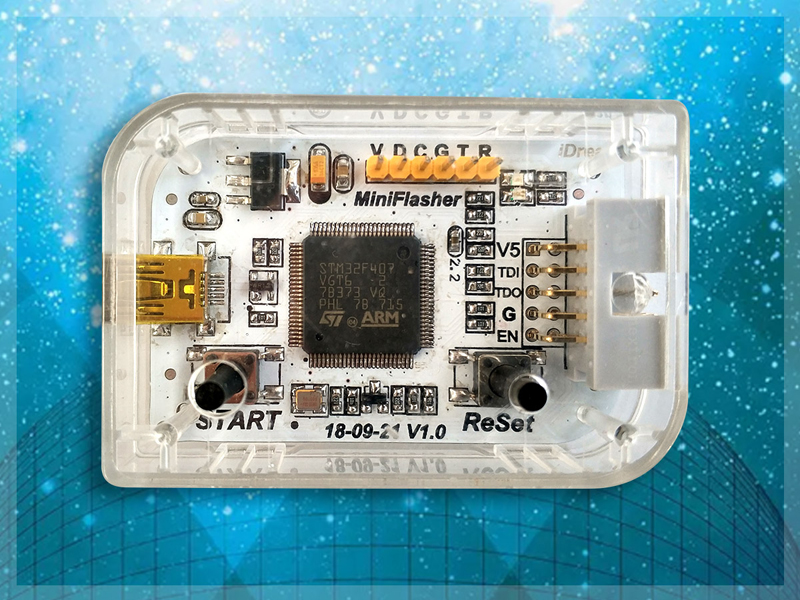
JLink Ultra & JLink Pro V4
也是出自于XHWW大神之作，重新修改了下原理及PCB，两层板画下来了，stm32f4+Cyclone4，高速USB、以太网，速度最高能到50000KHz，下载速度很快，但也没那么快，受限于目标芯片的flash速度，下载也就那样，不过配套的JScope可是飞一般的快。第一版的JPro是17年搞的：
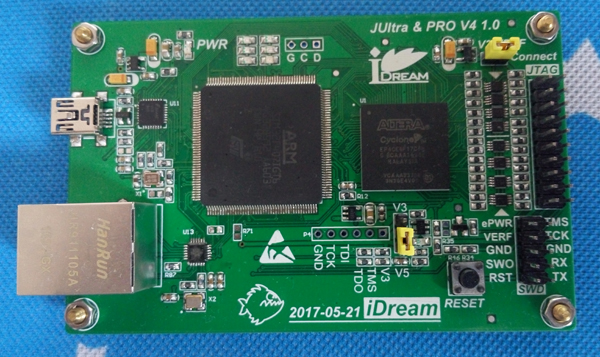
这个只是偶尔的拿出来用用，大部分时间都在吃灰，但却是一块很不错的arm+fpga的开发板，有需要的时候还可以拿出来鼓捣鼓捣。后来又做了下修改：
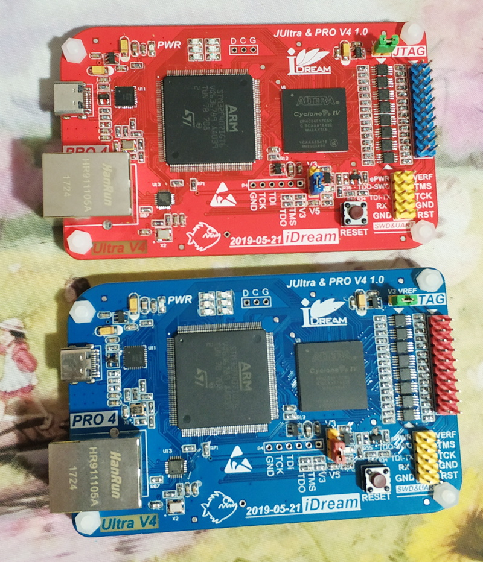
JLink V10 & JLink V11
依然是出自于XHWW大神之作，JLink V10、V11、Flasher Portable都使用了RSA2048签名，公钥存储在固件中用以验证签名是否正确，不正确不运行，私钥是没办法弄出来的，所以想要破解还是有一定难度的，感兴趣的可以私聊，我也是在XHWW大神的指点下孤岛了好久才不小心给试了出来。
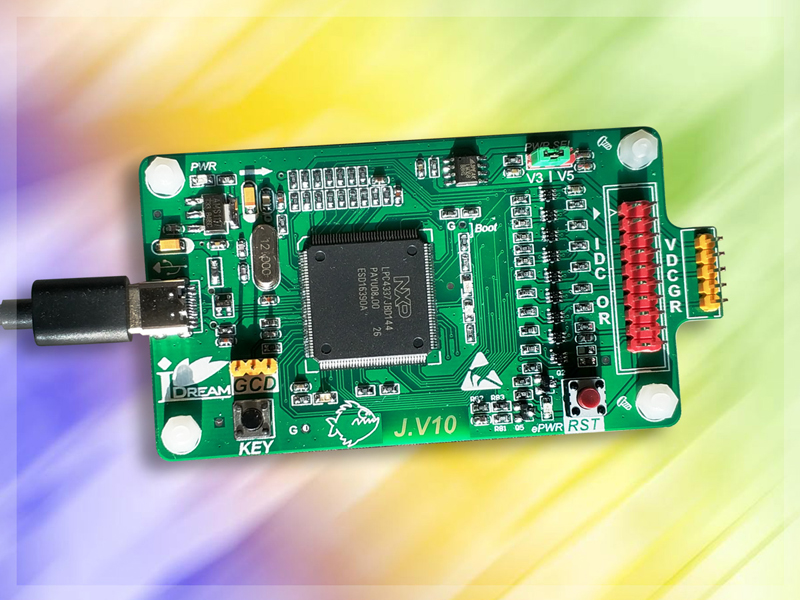
顺便提一下，V11的固件是可以在V10上直接运行的，下载速度也没啥变化，不晓得官方做了哪些改动，并且LPC4337也有DAPLink的固件，速度也是非常非常的快。可以按住按键更新不同的程序。
同样也少不了Mini V10 & Mini V11，虽然只支持3.3V电平，但是下载速度不受影响：
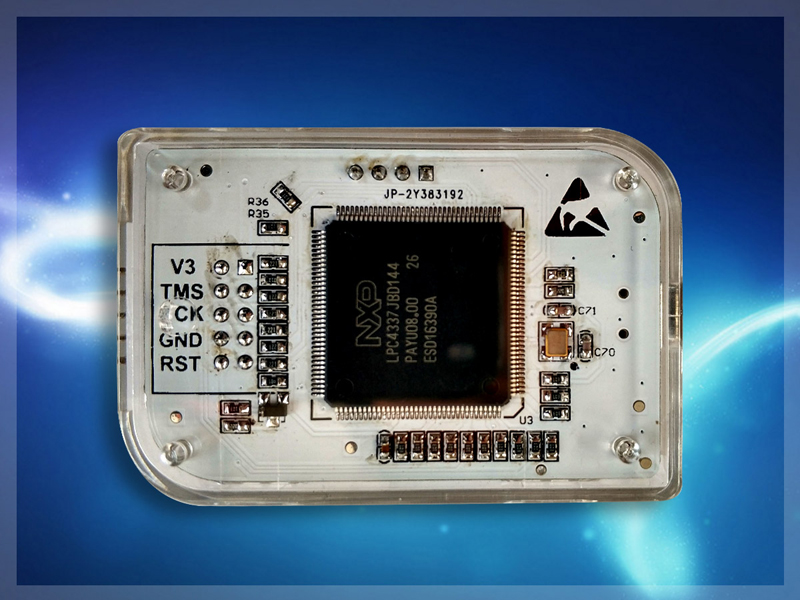
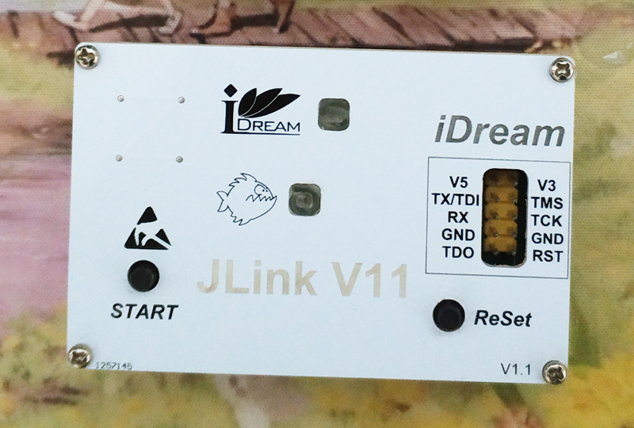
JLink V9
V9的年代更是很老了，貌似官方都停止更新了吧？曾经很好用很好用，没啥校验，固件烧上就可以跑，目前dll貌似对序列号后四字节校验做了判断。自从有了V10和mini flasher，就很少用V9了，留照纪念之。
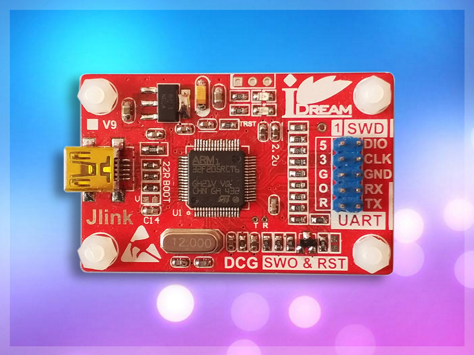
后来各种改，穿衣服，还和usb hub放一起，再加上个CH34x的一个usb转串口芯片，把Jlink、USB转RS232、USB转RS485、Hub接口都放一起了，也很好用的~
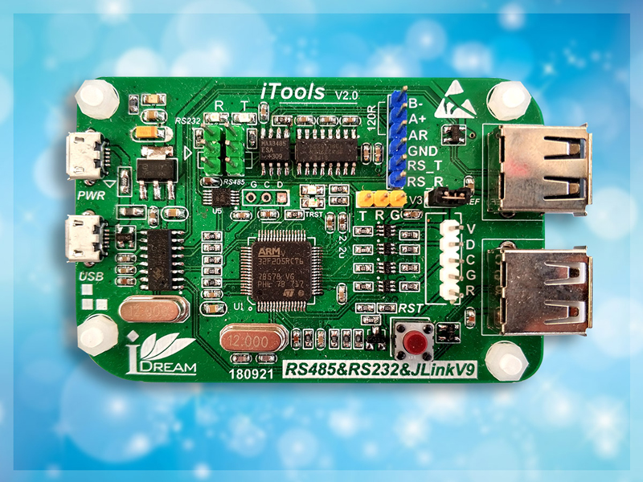
顺便提一下，序列号后四字节的校验如果不正确，Jlinkarm.dll有时会弹出defective的错误框，要么处理下jlinkarm.dll，要么就把这个序列号校验给加上，如果需要可以联系我，可提供针对序列号的校验码。（JLinkarm.dll中有此函数，可惜没有export出来，不过可以找出此函数然后调用它来计算）
JLink OB们
最初的JLink OB是103，在没有V9之前一直都是OB103陪伴着我，后来有了OB 072，还有了OB K22，貌似OB K22和JLink Mini硬件一致的，而且可用的版本众多，官方貌似开源了原理图了，所以照着画个板写个boot跳到App就可以运行了，其中最牛的是下面这个了：支持4路SWD、3路UART，是在Nodic的NRF91DK开发板上的，原理图都是公开的，照着画个就完事了。在使用一个JLink同时调多个目标板的时候，灰常灰常的好用，按下按键就切过去了~
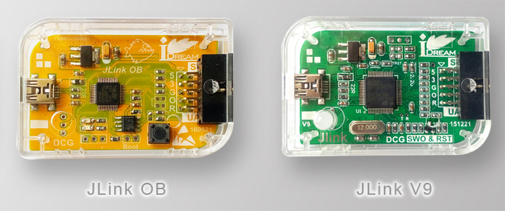
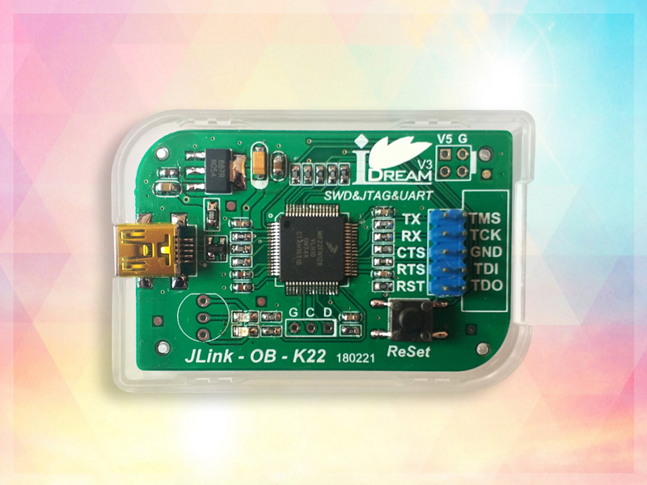
其他小工具
JLink SWD ISO: 隔离小板，只隔离SWD，速度不快，调试电机时还是很有必要。
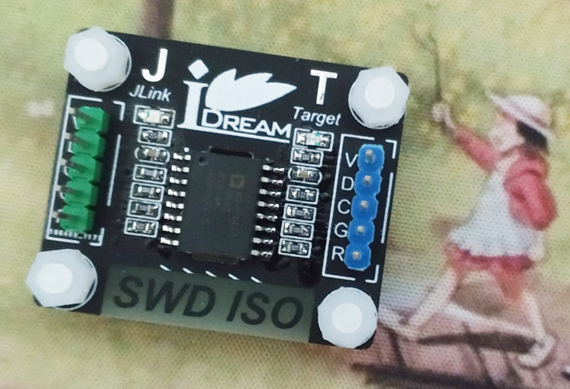
Xilinx的JTAG HS3、SMT2，很快，很好用，还有一路虚拟串口，支持选择1.8V/3.3V电平。
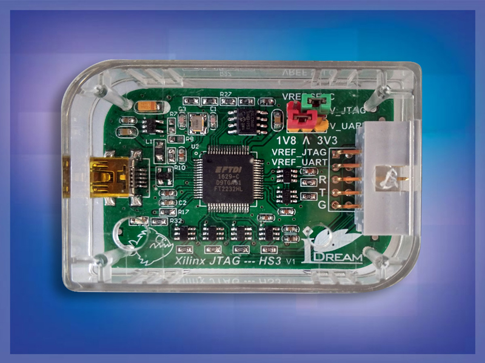
JLink CMDs
- exec InvalidateFW
- exec GetSNChecksum
- exec GetUID
- exec GetSignature
- exec VerifySignature
- exec SetSN
- exec ClearFeatures